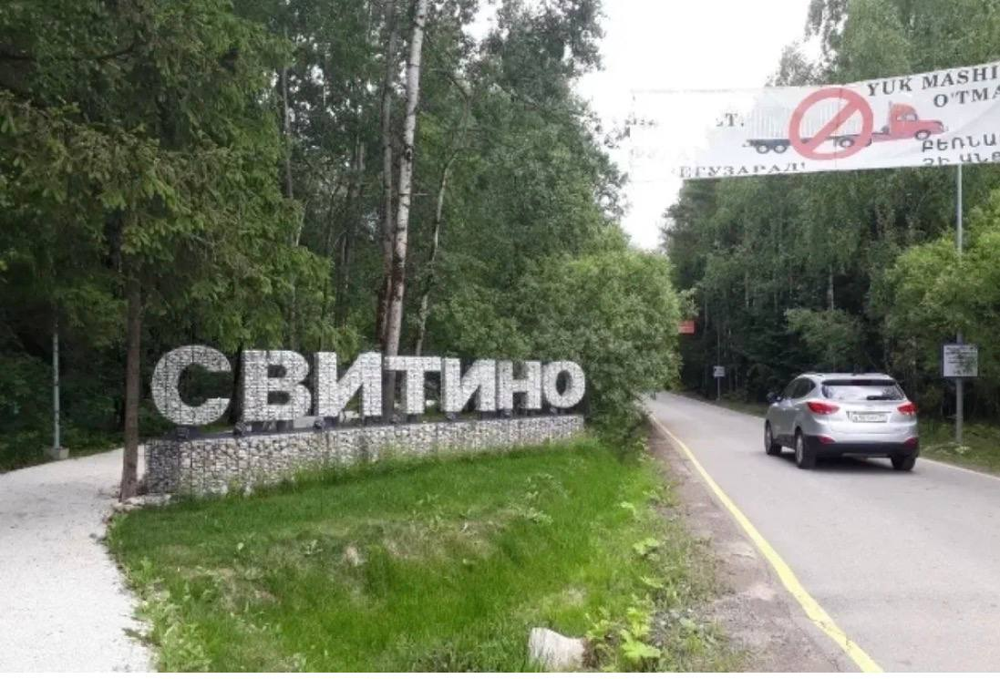

Сезон 1 · Выпуск 2
Скоро
Жизнь посёлка летом: люди, дворы, события.
Видеосюжеты, репортажи и эфиры о жизни, событиях и людях посёлка - продолжение того самого экрана, что светил между двух дубов с 1945 года.
Первый выпуск открывает сезон - знакомство с посёлком, его людьми и местами.

▶Лента выпусков пополняется. Следите за обновлениями или предложите сюжет.
Жизнь посёлка летом: люди, дворы, события.
Культурные события и праздники Свитино.
Молодёжь посёлка: о чём они мечтают.
Событие, история или человек, о котором стоит снять выпуск? Расскажите - и он может попасть в сезон.